건빵 이야기
게시: 2025-05-05T06:30:57+09:00
죄송합니다만 오늘 분량은 예전에 썼던 글을 재탕해서 올립니다.
--------------------
건빵은 영어로는 hardtack이라고 합니다. 사실 건빵이라고 번역될 수 있는 영어 단어는 매우 많습니다. 두번 구웠다는 뜻에서 biscuit이라고도 부르고, 단단한 빵이라고 해서 hard bread라고도 부릅니다. 나폴레옹 전쟁 당시 영국군은 이 지겹게 먹던 건빵을 그냥 Tommy라고 불렀다고 합니다. 오리지널 건빵은 맛이 없습니다. 그건 누구도 부정할 수 없는 사실입니다. 여러분들이 군대에서 드셔 보신 건빵이나 시중에서 사드시는 건빵은 그런 대로 맛이 있지요 ? 그건 거기에 설탕과 베이킹 파우더가 많이 든, 거의 과자 수준의 건빵이기 때문에 그렇습니다. 그런 건빵은 일제 시대 때 일본군의 건빵에서 유래되었다고 하는데, 전통적인 건빵과는 거리가 좀 있습니다. 아마 여러분 중에서도 미군 전투식량인 MRE (Meal Ready to Eat 또는 Meal Rejected by Ethiopians)를 드셔보신 분이 있을텐데, 거기에도 건빵, 즉 크래커가 포함되어 있지요. 일단 단맛도 전혀 안나고 짠맛도 거의 없으며, 생각하는 것보다 훨씬 더 뻑뻑합니다. 즉, 수분이 거의 없다는 것이지요. 사실 그래야 보존성도 더 좋고, 주식으로 먹어도 질리지 않습니다. 미군 MRE에는 나름대로 여러가지 메뉴가 있습니다만, 모든 메뉴에 꼭 들어있는 기본 품목 중 하나가 이 건빵과 땅콩버터입니다.
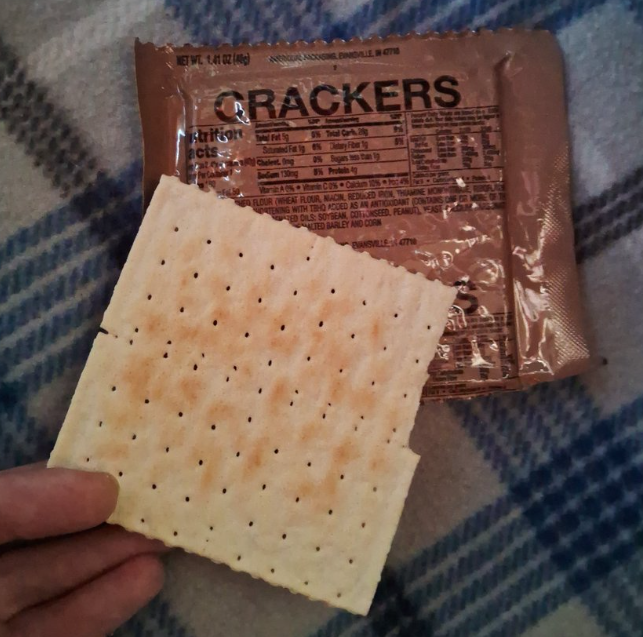
(MRE에 포함된 크래커입니다. 꽤 큼직합니다.)
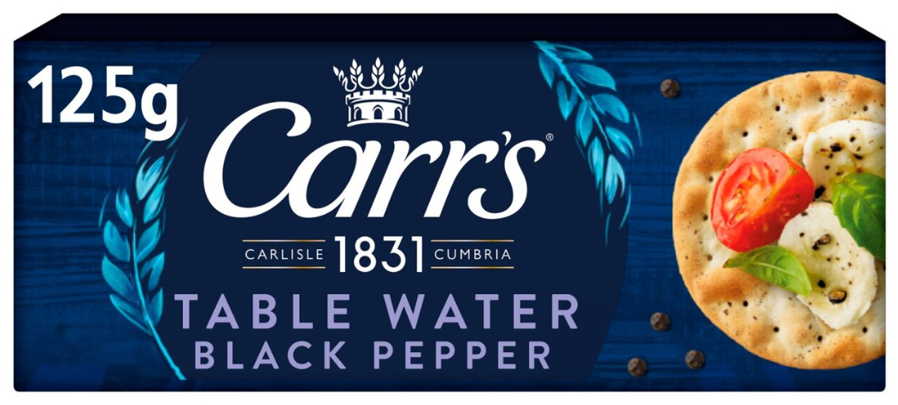
(19세기 중반 때부터 대양 항해선에서 애용되던 형태를 현대까지 비교적 잘 유지하고 있다는 Carr's Table Water Cracker 입니다. 먹어보면 더 뻑뻑하고 소금이 전혀 들어가지 않은 참크래커 비슷한 맛이 나는데, 조금 더 담백하다고 해야 하나 그렇습니다.)
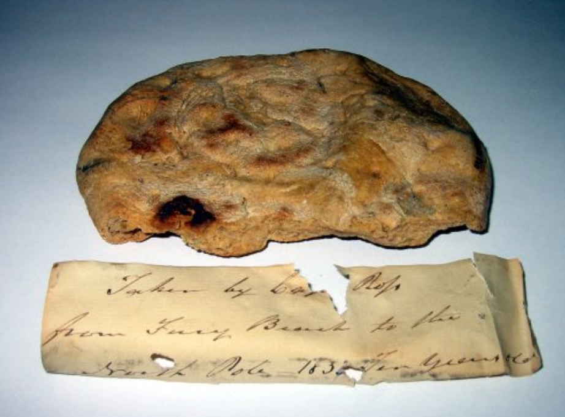
(나폴레옹 시대의 건빵은 그런 크래커보다는 훨씬 더 두껍고 또 큼직했습니다. 아래는 1820년대 정도에 침몰했던 영국 군함 HMS Fury 호에서 건져낸 당시의 건빵입니다. 훨씬 두툼하고 또 울퉁불퉁 하지요?) 그런데 누가 이렇게 맛없는 건빵을 만들어 먹었을까요? 바로 군인들과 선원들이었습니다. 왜 만들어 먹었을까요? 맛은 분명히 아니고, 바로 보존성 때문이었습니다. 빵보다야 당연히 바싹 마른 건빵이 더 보존성이 좋습니다. 또 부피도 더 작고, 또 워낙 단단하다보니, 창고에 쌓아놓거나 배낭에 쑤셔넣기에 딱 좋지요. 흔히들, 동양에서 먹는 밥보다는 빵이 더 군용 식량에 적합하다고 생각하실 것입니다. 빵은 휴대성이 더 좋기 때문입니다. 게다가 그릇이나 스푼같은 식기가 없어도, 손만으로도 먹을 수 있기 때문이기도 합니다. 그러나 실제로는 전혀 그렇지 않았습니다. 빵 만들어보신 분은 아시겠지만, 빵을 야전에서 만드는 것에는 다음과 같은 어려움이 따릅니다. 일단, 재료의 문제입니다. 빵은 밀로 만드는 것이 아니고, 밀가루와 효모로 만드는 것입니다. 밀가루라는 것은 만드는 데도 돈과 시간과 노동력이 많이 들어가고, 또 낟알 형태의 밀보다 더 쉽게 상하는 물건입니다. 아마 밀 낟알에 비해 공기나 습기에 접하는 표면적이 크게 넓어지는 것과 관계가 있을 것입니다. 실제로 근세에 이르기까지, 모든 군대는 대규모로 곡물을 저장할 때는, 밀을 밀가루 형태로 휴대하지 않고, 탈곡하지 않은 밀알의 형태로 가지고 다녔습니다. 가령 알렉산더 대왕이 이집트에 알렉산드리아를 건설할 때, 측량 기사들이 측량한 선을 긋기 위해 진흙밭에 군량으로 가지고 온 밀알을 뿌렸는데 거기서 싹이 터서 도시의 경계를 표시했다고 합니다. 또 제7차 십자군을 이끌고 이집트 원정을 가던 프랑스 루이 9세가 식량 보급을 위해 키프로스 섬에 쌓아놓은 밀 더미에서 싹이 터서 마치 풀밭으로 뒤덮인 언덕처럼 되었다는 기록이 있습니다.
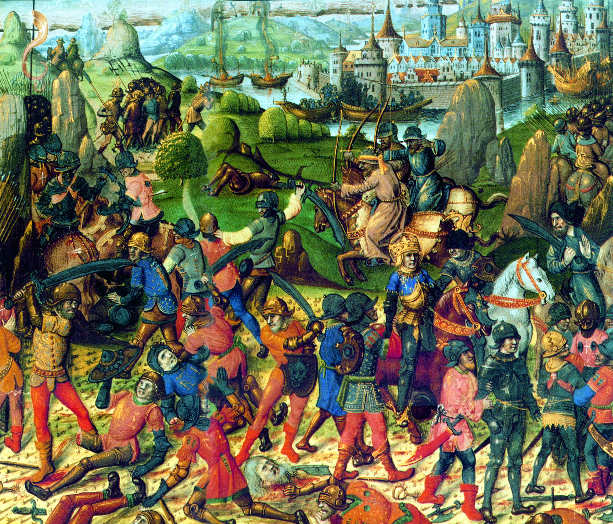
(사후에 성자로도 추대될 정도로 신앙심이 깊었던 루이 9세는 불행히도 싸움 재주는 별로 없어서 1251년 알 만수라 전투에서 사라센군에게 대패하고 포로가 됩니다. 머리 뒤에 광륜(halo, 후광)이 그려진 사람이 루이 9세인데, 이제 막 사라센 병사들에 의해 말에서 끌어내려지고 있습니다. 이후 큰 액수의 몸값을 지불하고 풀려납니다.) 이 밀을 찧고 키질해서 껍질을 벗기고, 또 휴대용 맷돌로 갈아서 밀가루 만드는 것은 매우 고되고 시간도 많이 걸리는 일이었습니다. 몇 천명의 부대원이 먹을 밀가루를 빠른 시간 내에 갈아내려면 그 무거운 맷돌만도 몇 개를 짊어지고 다녀야 하겠습니까? 그런데 실제로 그렇게 했었습니다. 가령 케사르의 라이벌이었던 폼페이우스가 로마의 숙적이던 파르티아에 쳐들어갔다가 오히려 적에게 포위되는 바람에 식량이 부족해지자, 진지 내에서 '거칠게 간 밀가루로 구운 빵 한 덩어리가 같은 무게의 은과 교환되었다'라는 기록이 있습니다. 효모, 즉 누룩도 문제였습니다. 집에서 빵을 구워보신 분들은 아시겠습니다만, 당시에 쓰던 자연 효모라는 것은 베이킹 파우더처럼 다루기 쉬운 물건이 아닙니다. 아마 개신교나 천주교가 아닌 분들도 무교병(matzah, unleavened bread)이라는 이야기를 들어보신 적 있으실 겁니다. 성서의 출애급기에서, 모세가 유대인들을 이끌고 이집트를 빠져나올 때, 너무 서두르다보니 빵을 발효시킬 누룩(효모)을 가져오지 못해 유대인들이 발효되어 부풀지 않은, 납작한 빵, 즉 무교병을 먹었다는 이야기입니다. 이 일을 기리기 위한 무교절이라는 명절까지도 있답니다. " 너희는 무교절 축제를 지켜야 한다. 이날은 바로 내가 너희 군대를 이집트땅에서 이끌어낸 날이다.너희는 대대로 이날을 영원한 축제일로 정하여라. 정월십사일 저녁까지 너희는 누룩이 없는 빵을 먹어야 한다." (출애급기 12:17~18)
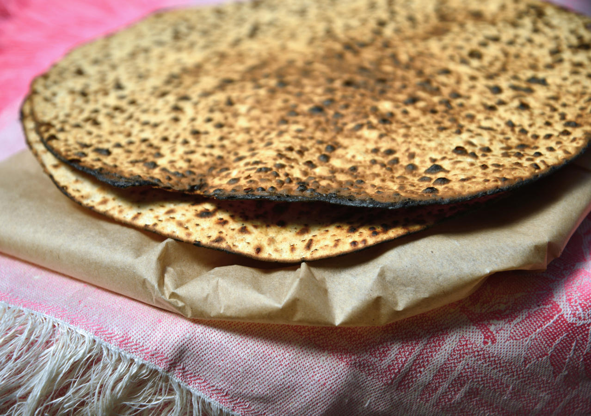
(무교절 때 유대인들이 먹는 matzah입니다.) 총알이 날아다니고 적의 기병대가 우르르 달려오는 전쟁터에서 밀가루 반죽에 효모를 넣어두고 축축한 천으로 덮은 뒤 빵이 부풀기를 반나절 동안 기다리는 것은 좀 무리입니다. 아마 몇천 명 분량의 발효 중인 빵 반죽을 보관할 장소도 마땅히 않았을 겁니다. 또 오븐은 어떻게 구하겠습니까? 빵은 간단한 솥단지에서 구울 수 있는 음식이 아니고, 벽돌이나 진흙으로 만든 오븐이 있어야 구울 수 있는 물건입니다. 나폴레옹 전쟁 기록을 보면, 어느 쪽 군대든 후퇴할 때는 뒤를 쫓아오는 적군이 빵을 굽지 못하도록 그 동네의 오븐을 부숴버리는 장면이 종종 나옵니다. 게다가 밀가루 반죽 작업은 정말 중노동입니다. 그래서 요즘 제과점에서는 모두 기계로 된 반죽기를 쓰지 손으로 반죽은 못한다고 합니다. 결정적으로, 이렇게 애써서 만들어놓은 빵은 그리 보존성이 좋지 못했습니다. 그 시절의 방부제가 없는 밀가루로 구운 경우, 날씨에 따라 다르겠지만 며칠이나 갔을까요? 나폴레옹 휘하에 있던 병사들이 적은 수기를 보면, 오랫동안 굶다가 마침내 빵 마차가 와서 기쁜 마음으로 배급을 받았는데, 정작 받은 빵이 온통 곰팡이 투성이라서 무척 실망했다는 구절이 종종 나옵니다. 결과적으로, 병사들은 야전에서도 할 수만 있다면 빵을 먹고자 했고 실제로도 빵을 먹긴 했지만, 많은 경우, 특히 행군을 할 때는 '건빵' 또는 '비스킷'을 만들어 먹었습니다. 일단 이 분야의 선두 주자가 로마군이었습니다. 물론 요새에 주둔할 때는 제대로 된 빵을 먹었습니다만, 행군할 때는 밀가루에 소금을 약간 넣고 물로 반죽한 것을 그대로 딱딱하게 구운 buccelatum(부켈라툼. 라틴어 buccella에서 온 단어로서, 한 입, 한 조각 정도의 뜻)라는 음식 즉 건빵을 만들어 먹었습니다. 또 이 건빵은 휴대하기도 쉽고, 부피도 작았습니다. 마르쿠스 아우렐리우스 황제에 대해 반란을 일으켰던 장군 카시우스(Avidius Cassius)가 내린 명령 중에는 병사들에게 '돼지비계와 부켈라툼, 그리고 신 포도주 즉 식초 외에는 아무 것도 휴대하지 말라'는 것이 있었습니다. 아마 저것들이 당시 로마군의 필수적인 배식 품목이었나 봅니다.
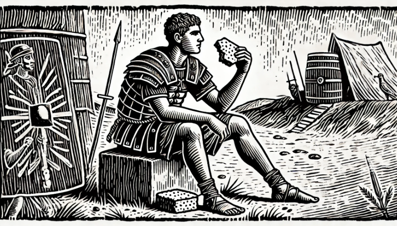
(로마군 병사가 부켈라툼을 먹는 상상도입니다만, 당시 1인당 하루에 1파운드 정도의 밀가루가 배급되었으므로, 실제 부켈라툼이 저렇게 크지는 않았을 겁니다.) 육상에서도 이 모양이었으니, 배에서는 더 선택의 여지가 없었습니다. 특히 대양을 항해하는 배에서는, 빵이든 건빵이든 뭔가 구울 연료를 많이 실을 수 없다는 문제가 더 있었기 때문이었습니다. 당시 대서양과 인도양을 항해하던 배들의 주된 식량은 건빵과 함께 염장 쇠고기, 염장 돼지고기였습니다. 염장 육류는 일단 소금기를 빼낸 뒤 삶아야 먹을 수 있는 식품이었으므로, 이것만으로도 꽤 많은 석탄이나 땔나무가 소모되었는데, 매일 먹을 건빵이나 빵을 굽기 위해 소중한 연료를 낭비할 수는 없었습니다. 특히, 오븐에서 빵이나 건빵을 굽는 것은, 솥에 삶는 것에 비해 연료 소모량이 많은 편이었습니다. 따라서 결국 대양을 항해할 선박들은, 미리 구워둔 건빵을 잔뜩 싣고 떠나는 것 외에는 다른 선택의 여지가 없었습니다. 제가 따로 쓴 글 중에서, 나폴레옹 전쟁 당시 영국 해군의 일요일 특별식으로 더프(duff)라는 일종의 푸딩이 제공되었다는 이야기가 나옵니다. 이 더프라는 푸딩은, 간단히 말하자면 삶아서 만드는 케익같은 거라고 보시면 됩니다. 배에서는 오븐에 케익을 구우려니 연료가 너무 낭비되었으므로, 주로 삶아서 만들 수 있는 디저트를 만들었던 것입니다.
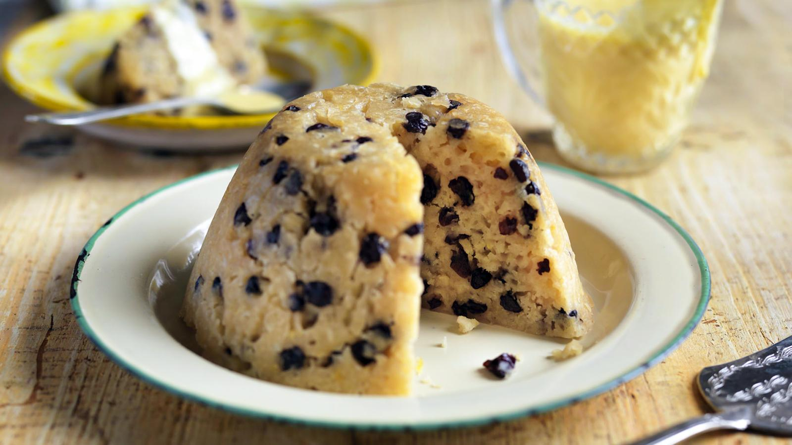
(영국 해군에서 (물론 장교들만) 즐겨먹던 푸딩인 spotted dick입니다. 굽지 않고 쪄서 만듭니다.)
나폴레옹 전쟁 시기의 영국 해군 이야기인 혼블로워 시리즈를 보면, 장교나 수병이나 건빵을 먹기전에 탁자에 건빵을 세게 탁탁 내리쳐서 그 속의 바구미와 구더기를 빼내는 장면이 나옵니다. 아무래도 당시의 보관 수준으로는 건빵에 이런 벌레가 꼬이고 알을 낳는 것을 막을 수가 없었던 것이지요. 벌레 뿐만 아니라, 배에 꼭 있게 마련인 쥐들도 이런 건빵 더미 속에서 아주 행복한 시간을 보냈습니다. 신선한 고기가 떨어지고 나면, 염장 쇠고기에 질려버린 선원들은 결국 이 쥐를 잡아먹기 시작했는데, 당시 영국 해군에서는 이런 쥐고기를 miller (방앗간 주인)이라고 불렀습니다. 그렇게 부른 이유 중의 하나가, 이 쥐들은 주로 건빵 가루로 뒤덮힌 채 살았기 때문이라고 합니다. 이탈리아에서는 이 건빵의 단조로움에 벗어나, 획기적인 장기보존 식량이 개발되었습니다. 바로 파스타입니다. 건조 파스타는 부피도 작고, 장기 보존도 가능하고, 솥에 삶기만 하면 아주 훌륭한, 야들야들한 식사가 되었으므로 특히 해군에서 크게 환영받았습니다. 당시 영국 해군은 건빵과 럼주를, 이탈리아 해군은 파스타와 와인을 주식으로 삼았다고 합니다. 아무래도... 웰빙은 역시 이탈리아죠 ?
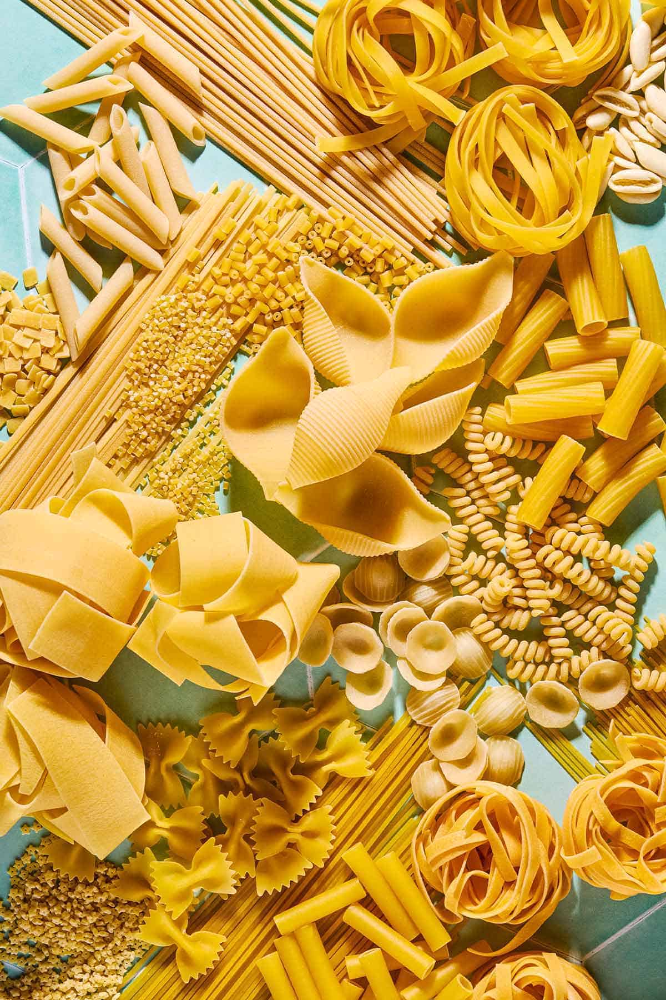
(맛있는 음식은 반드시 다른 나라로 퍼져 나갑니다. 세계에서 파스타를 먹지 않는 나라는 아마 거의 없을 것 같은데, 보존성도 좋고 맛도 괜찮고 만들기도 쉽고 가격도 비싸지 않아서 참 좋은 식품이라고 생각됩니다.)
미국 남북전쟁 당시의 북군 병사의 수기를 보면, 이 건빵에 대해서 원망하는 장면이 나오는데, 무엇보다도 그 딱딱함에 대해 불평하고 있습니다. 농담이나 과장이 아니라는 것을 강조하면서, 이 건빵이 너무나 딱딱해서 이빨이 들어가지 않으므로, 총개머리판이나 돌을 이용해서 건빵을 부수는데, 가끔씩은 내리치는 돌이 깨졌다고 합니다. 이것을 그대로는 도저히 먹을 수가 없었고, 커피(그래봐야 치커리를 볶은 대용커피)에 적셔야 겨우 먹을 수 있었다고 합니다. 사실 이 북군 병사가 먹은 건빵은 갓 구웠을 때는 먹을 만 했다고 합니다. 문제는 이 건빵이 필라델피아의 공장에서 구워진 후 전선의 병사들에게 배급될때까지는 최소 3개월이 걸렸다고 하니, 그 맛과 딱딱함을 짐작하실 겁니다.
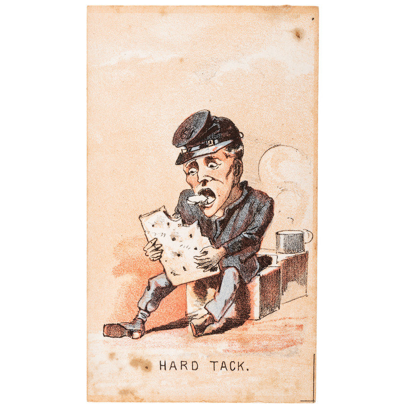
(미국 남북전쟁 당시의 건빵을 유머스럽게 그린 만화입니다.)
철도가 발달하면서부터 보급이 원활해졌고, 또 장기화, 고착화된 참호전으로 인해, 1차 세계대전 때에는 양측 병사들이 야전에서도 빵을 먹을 수 있었습니다. 관련 영상을 본 적이 있는데, 영국군의 둥글고 납작한 빵이 기차역에 산더미처럼 쌓여 있는데, 현장의 영국 병사가 군화발로 그 빵더미 위에 올라가 있는 것으로 보아 그 딱딱함은 건빵에 버금갔던 것 같습니다.
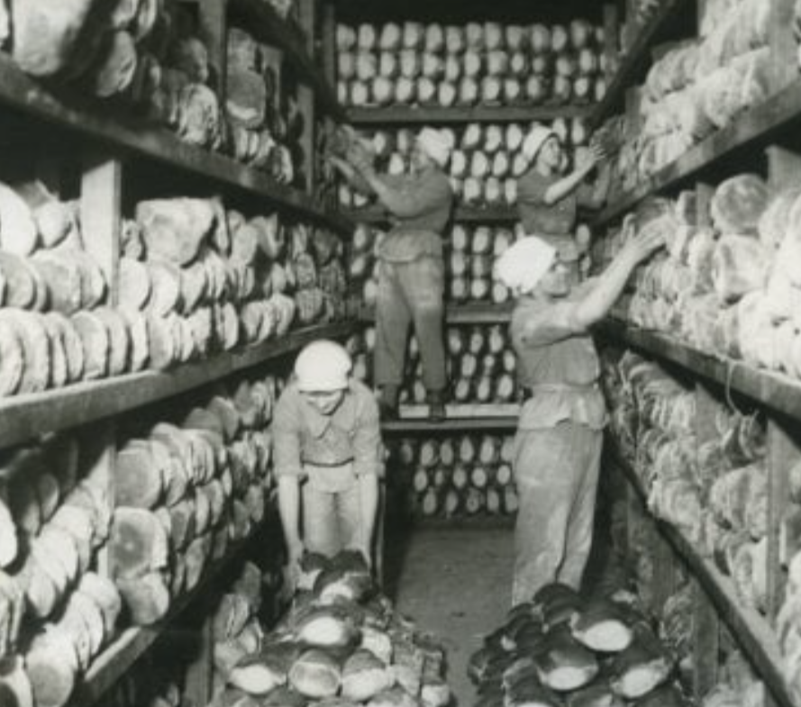
(1917년 영국 여성 육군 지원대(Women's Army Auxiliary Corps) 인원들이 전선에 보낼 빵을 정리하고 있습니다.)
우리나라나 중국, 일본 등지에서는 주로 밥을 먹었기 때문에, 병사들의 건빵이 주는 고통에 시달리지는 않았습니다. 밥을 해먹자면, 그냥 약간의 땔감에 솥과 물, 쌀만 있으면 되니까 제분에 반죽, 발효, 오븐에 굽는 과정을 거쳐야 하는 빵에 비하자면 훨씬 간편한 편이었지요. 하지만, 빵이 아니라, 그냥 배낭에서 꺼내 부수어 먹기만 하면 되는 건빵에 비하면, 밥을 지어 먹는다는 것은 매우 번거로운 일이었습니다. 건빵에 해당하는 동양의 전투 식량이 있었을까요? 사마천이 쓴 사기 열전을 보면, 한무제 시절, 흉노의 8만 기병에 맞서 겨우 5천명의 보병을 이끌고 북쪽으로 쳐들어갔던 젊은 한나라 장군 이릉에 대한 이야기가 자세히 나옵니다. 이 친구는 결국 중과부적으로 흉노에게 항복하게 되는데, 사마천이 이 친구를 변호하다가 노한 한무제에게 거세를 당하는 형벌을 받기 때문에, 비교적 상세하게 써놓았습니다. 이 이릉이라는 장군이 흉노에게 포위되었을 때, 춥고 지친 병사들에게 휴대식량으로 냉반(冷飯), 즉 얼린 밥을 나눠주며 포위망을 뚫으려 했다는 이야기가 나옵니다. 이게 과연 글자 그대로 얼린 밥인지는 모르겠습니다만, 때가 추운 겨울이어서 가능한 이야기였을 겁니다. 우리나라 역사를 보면, 신라 시대 때 외적이 쳐들어와 동네 장정들이 군대에 소집될 때는, 벽에 걸어두었던 북어 한마리를 허리춤에 푹 찔러넣고 전쟁터로 나갔다는 이야기를 읽은 적이 있습니다. 말린 북어는 정말 영양가도 많고, 보존성도 좋았을 것 같습니다.
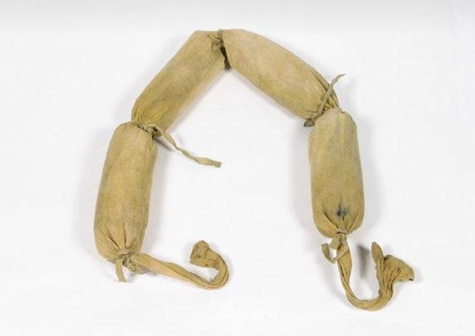
(한국전쟁 때 중공군이 사용했다는 미숫가루 등을 담은 식량 포대입니다.)
하지만 뭐 오래된 역사책 뒤질 것 없습니다. 바로 6.25 사변 때, 중공군이나 인민군이 어깨에 둘러맨 포대에 뭐가 들어있었는지 다들 기억하시쟎습니까? 예, 볶은 곡식 가루, 즉 미숫가루만큼 좋은 휴대 식량이 어디 있겠습니까? 미숫가루는 고대 그리스에서도 애용되던 휴대 식량이었습니다. 원래 당시 그리스 해군은 좁은 배에 많은 노젓는 수병이 타는 갤리선의 특성상, 식사 때마다 해안가에 배를 대고 해변에서 죽을 끓이든 빵을 굽든 해서 먹었습니다. 하지만, 아테네군이 미틸레네 섬에 급전을 보내기 위해 쾌속선을 보낼 때는, 배를 해변에 댈 틈이 없었으므로 선원들이 밀가루와 보리가루에 포도주 및 올리브 기름을 섞어 반죽한 것을 먹어가며 노를 저었다고 합니다. 또 아테네의 장군인 니키아스가, 시칠리아 섬으로의 원정 중에 행한 연설 내용 중에는, 준비해야 하는 보급품 목록도 나오는데, 그 중에는 볶은 보리도 포함되어 있습니다. 볶은 보리라... 제 생각에는 그걸로 만들 수 있는 것은 미숫가루 밖에 없을 것 같은데요. 여러분도 그렇게 생각되시지 않나요 ?
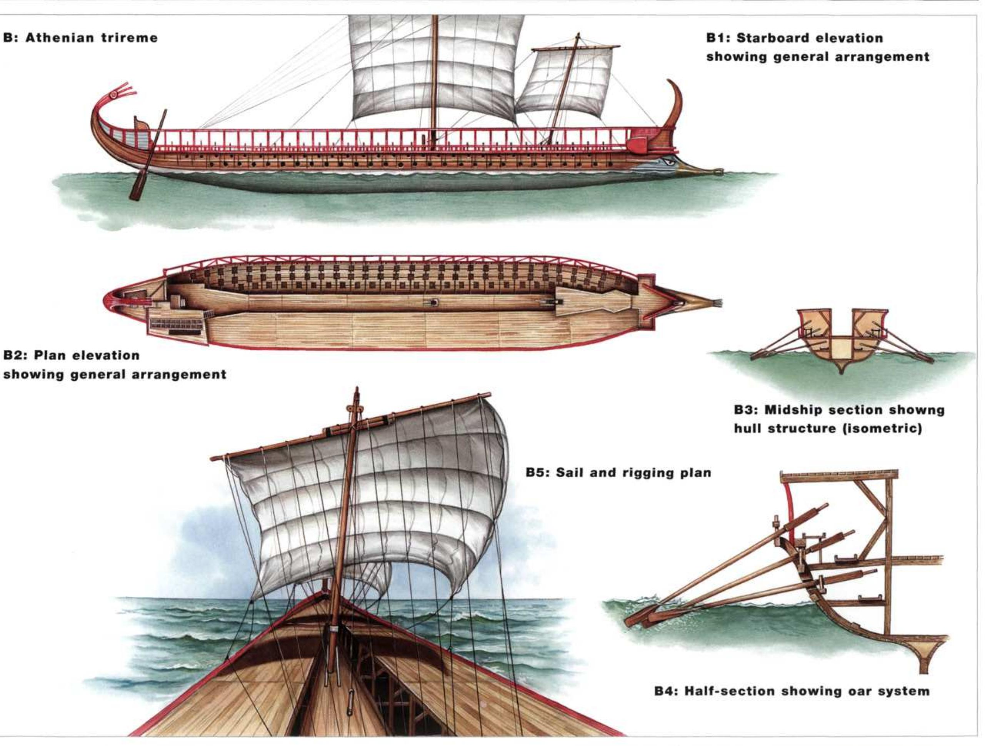
(고대 그리스의 3단노선입니다. 펠로폰네소스 전쟁 초기만 해도 저 노수들은 급여를 받지 않는 자유시민들이었으나 나중에는 일당을 받는 일종의 용병으로 채워졌고, 더 나중에는 일부가 노예로 채워지기도 했습니다.)